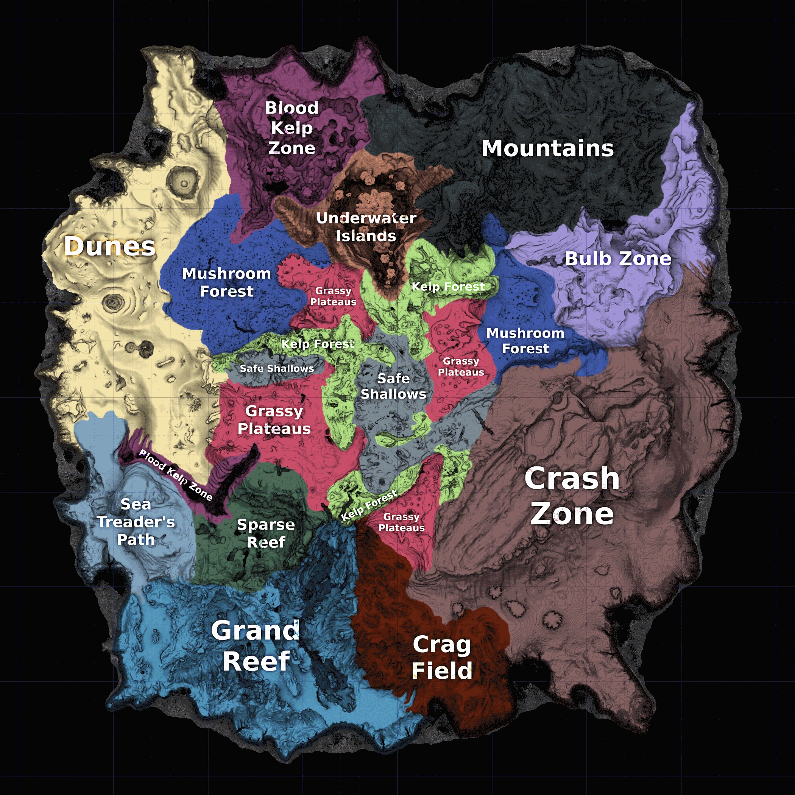
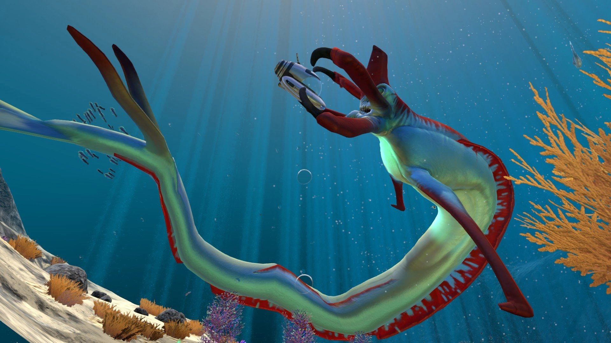

Az UnknownWorlds csapata egy egészen egyedülálló, felfedezésért kiáltó világot teremtett a sok éve készülő és besorolhatatlan műfajú Subnauticával, amely a 22. században, egy vízzel borított idegen bolygón játszódik, és amelyet jobb ötlet híján víz alatti Minecraftként szoktak jellemezni, de ennyi erővel lehetne nyílt világú SOMA is. A játékos az Alterra vállalat alkalmazásában álló Ryley Robinson búvárruhájába bújhat, hogy a bizarr élőlényekkel, növényekkel, nyersanyagokkal és sötét titkokkal teli víz alatti világ Robinsonjává váljon. Az in medias res bevezetőben az Aurora űrhajó lezuhan a költői nevű 4546B bolygón, mi azonban már csak a becsapódott roncsot látjuk, hiszen Ryley az 5-ös számú mentőkabinban még időben elhagyja a fedélzetet ahhoz, hogy a közelben landolva látszólag egyedül túlélje a katasztrófát. Egyetlen társunk a PDA-nk túlélési tippeket osztogató mesterséges intelligenciája, feladatunk pedig életben maradni, felkutatni az esetleges további túlélőket, és megtalálni a hazajutás módját.
FELFEDEZŐSDI?
A Subnautica egy open world túlélőjáték, amelynek méretes bejárható térképe egyedi flórával és faunával rendelkező régiókkal, ún. biomokkal rendelkezik. Ezek különböző mélységeken, víz alatti barlangrendszerekben, vagy a kevés sziget egyikén találhatóak, és végig kiemelt feladatunk a tanulmányozásuk, hiszen az életben maradáshoz ismernünk kell a rendelkezésre álló nyersanyagokat.
Szerencsénkre az Aurora a bolygó egy olyan részén zuhant le, ahol a vízmélység elenyésző, így a későbbiekben is menedéket jelentő 5-ös mentőkabin a már-már idilli Safe Shallows régióban lebeg. Ez a terület tökéletesen alkalmas arra, hogy az első pár merülés során beletanuljunk a játékmenet alapjaiba, mert a kezdőfelszerelés legyártásához szükséges nyersanyag és az ehető-iható halállomány bőséges, emellett a színpompás és nagyrészt barátságos élővilág teljesen elvarázsol. Miközben kedvünkre lubickolunk, beleúszunk a színes és éjjel foszforeszkáló halrajokba, illetve köveket és kagylót gyűjtünk, megtanuljuk, miből tudunk élelmet és vizet előállítani, és a hatékonyabb boldogulás érdekében elkezdünk egyszerűbb tárgyakat kraftolni.
Egy rendkívüli kaland veszi kezdetét, ahol az észbontóan izgalmas világot fokozatosan megismerve és más túlélők után kutatva rájövünk, hogy nem elsőként járunk a bolygón, és korábbi hajótöröttek nyomain, valamint az Aurora leszakadt és szétszóródott roncsain túl egy ősi faj rejtélyes építményeire is bukkanunk. A történetről vétek lenne többet elárulni, ami viszont az élővilágot illeti, a hosszú élet titka a kiváncsiság, óvatosság és békés megfigyelés hármasának egészséges aránya, vagy ha úgy tetszik, az „élni és élni hagyni” elv követése. Bár a legtöbb hal jobban tart tőlünk, mint mi tőlük, a külső sokszor csalóka, és ahogy némely óriási élőlény ránk se bagózik, úgy az apró halak közt is akad igen veszélyes példány. A felfedezés öröme visz rá, hogy egyre messzebbre merészkedjünk, az egyre több ismeret hatására pedig olykor abba az illúzióba ringatjuk magunkat, hogy már nem érhetnek váratlan helyzetek, aztán nagyot nézünk, amikor még sok játékóra után is elképesztő meglepetések és történetbéli fordulatok várnak. Részemről annyira a vízi világ rabjává váltam, hogy többször teljesen belefeledkeztem a bámészkodásba, és a „csak még egy kicsit elúszok arra” hibába esve megfulladtam, de hasonlóan kínos az ivóvízből kifogyva valahol az óceán mélyén szomjan halni.
A felfedezés nemcsak a túlélést szolgálja, de fontosságát alátámasztja az is, hogy a négy választható játékmódból kettő is erre van kihegyezve. Freedom Mode-ban csak arra kell figyelnünk, hogy az életerőnk és a levegőnk ne fogyjon el, a Creative Mode-ban pedig még ezekre sem. Utóbbi lényege, hogy történet, valamint bármiféle megkötés nélkül bejárhatjuk és beépíthetjük a világot.
TÚLÉLŐSDI?
A másik két játékmód az elsőként felkínált Survival, illetve ennek szadista változata, a Hardcore Mode. Az első annyit jelent, hogy életerőnk és levegőnk mellett oda kell figyelnük az éhségre és a szomjúságra is, de ha meghalunk, legrosszabb esetben is csak némi cuccot bukva visszakerülünk a bázisunkra, míg az utóbbinál halál esetén kezdhetjük elölről a játékot. Jómagam a teljes élmény megtapasztalása érdekében mindenkit bátorítok a Survival mode választására, annak ellenére, hogy eddig azt hittem, ki nem állhatom a túlélőműfajt.
Nálam hozzáértőbbek szerint a Subnautica még úgy is a valaha készült talán legjobb túlélőjáték, hogy enyhén szólva nélkülözi a valósághűséget, és nem kerget az őrületbe nyolcféle szükséglet kötelező szinten tartásával, így például nem kell azon izgulnunk, hogy emberünk a sok úszás miatt elájul a kimerültségtől vagy búvárkodás közben összecsinálja magát. Az éhséget és szomjúságot jelző mutatók olyan ütemben apadnak, hogy az egyrészt hihető, másrészt nem idegesítő és nem vonja el a felfedezésről a figyelmet, mert nem kell öt percenként elrágcsálnunk egy szárított halat, majd ráküldeni fél liter fertőtlenített ivóvízet. Ezek előteremtése amúgy sem túl bonyolult, viszont nagyban hozzájárulnak ahhoz, hogy teljes joggal érezd magad életképes túlélőnek, amikor egy hosszabb felfedezőúton diadalittasan tudod őket előhúzni a tatyóból. Még izgalmasabb, amikor az útravaló mennyiségét alábecsülöd, és lehetőleg ötször eltévedve próbálsz az idővel versenyt futva a világ végéről visszakeveredni a legközelebbi bázisodig, mielőtt éhen vagy szomjan halnál. Nagyobb mélységeken az oxigén is rohamosan fogy, ezért szintén roppant adrenalinpumpáló egy-egy roncs belsejéből még épp időben visszaúszni a közelben letett járműig levegőért. Ilyen esetekben egyébként újabb pofon a realitásnak, hogy míg a gyengébb járműveket többszáz méter mélységben összeroppantja a víznyomás, addig emberünk vígan úszkál akár 500 méter mélyen is, de ha ezeket a dolgokat el tudjuk engedni, nagyon jól fogunk szórakozni.
Az alábbi videóban Icebluebird, alias Jégkékmadár végigjátszásat láthatjuk: